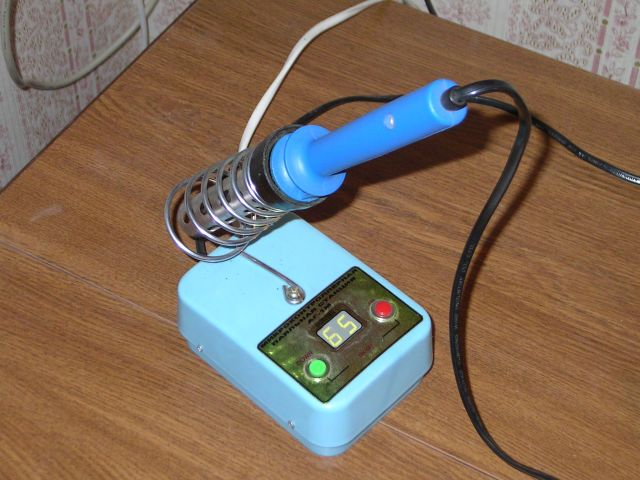

Регулятор мощности предназначен для регулирования мощности:-). У меня он используется для паяльника. Есть вариант прошивки для лампочки (там другой алгоритм регулирования).
Вот как выглядит готовое устройство:

В качестве корпуса использована мыльница. Держалка для паяльника сделана из китайской держалки для паяльника.
Схема состоит из трансформаторного источника питания, процессора(AT89C2051 от Атмел), двузначного семисегментного индикатора, схемы определения перехода сетевого напряжения через ноль и твердотельного реле. Тиристор я взял КУ208, но лучше взять импортный.
При включении устанавливается мощность в 70%. Нажатие кнопки «UP» увеличивает мощность, нажатие кнопки «DOWN» - уменьшает. Одновременное нажатие двух кнопок отключает нагрузку. Повторное одновременное нажатие - включает.
Я хотел приделать маленькую EEPROM для запоминания уровня, даже отладил это на макетке, но потом не стал.
Вот печатная плата:
Программа на Си, использовался компилятор Keil:
Вариант программы для лампы накаливания:
© AHTOXA, 2006.
{kind=link}
{kind=link}